Smartphone
Objektbiografie
Times of Waste

Mining
Wie viele Elemente stecken in einem Smartphone?
Ein Smartphone enthält mehr als 50 verschiedene Elemente, darunter seltene und aufwändig zu gewinnende Metalle. Ausserdem wird für das Polieren der Bildschirme die Seltene Erde Cer verwendet: In diesem Fall wird ein Element benötigt, das im fertigen Produkt gar nicht enthalten ist.
Metals never die
Viele dieser Elemente sind in unserer Umgebung alltäglich, wie Sauerstoff, Kohlenstoff oder Silizium. Dazu kommen Elemente, bei denen das Recycling schon seit Jahrzehnten gut funktioniert, zum Beispiel Silber. Das Recycling von Eisen („Schrotthandel“) wird schon seit Tausenden von Jahren betrieben – in jedem heute verwendeten Eisenstück stecken ein paar Eisenatome, die schon seit der Eisenzeit in Umlauf sind. Das ist eines der Axiome bei der Gewinnung, Verwendung und Ablagerung von Metallen: „Metals never die“ (Rainer Bunge, Hochschule Rapperswil).
Schweizerische Metallhandels AG Deutschland, Embrach, Schweiz: Wismut als Wertanlage
Ein Metall kann nicht vernichtet oder „entsorgt“ werden. Es kann allenfalls so stark mit anderen Stoffen vermischt werden, dass ein Recycling technisch nicht mehr machbar oder schlicht unwirtschaftlich ist. Rohstoffe ’vernichten’ durch Vermischen.
Wo liegen die Probleme
Problematisch sind Elemente, bei denen
- eine Rohstoff-Verknappung absehbar ist, weil der Bedarf steigt und das Recycling nicht funktioniert (Seltene Erden)
- die Gewinnung massive Umweltprobleme verursacht (Seltene Erden, Gold)
- der Abbau in Ländern mit niedrigen Sozial- und Umweltstandards erfolgt (Seltene Erden, generell fast alle Metalle)
- der Abbau in Kriegs- und Krisengebieten erfolgt („Konfliktrohstoffe“), z.B. Kobalt, Tantal, Zinn, Kupfer aus der Demokratischen Republik Kongo
Globalisierung auf dem Rohstoffmarkt
Im Zuge der Globalisierung ist folgende Tendenz erkennbar: Rohstoffe werden nicht mehr zwangsläufig dort abgebaut und verhüttet, wo die höchsten Konzentrationen der Rohstoffe vorliegen und die Anbindung an vorhandene Infrastruktur und Absatzmärkte gut ist, z.B. Kohle aus dem Ruhrgebiet. In den letzten Jahrzehnten wurden neue Minenstandorte bevorzugt in Ländern mit niedrigen Umwelt- und Sozialstandards errichtet. Da der weltweite Transport wegen des niedrigen Ölpreises unverhältnismässig billig ist und Handelsbeschränkungen weitgehend weggefallen sind, spielt es nur noch eine untergeordnete Rolle, wo die Rohstoffe geografisch liegen.
Ein eindrückliches Beispiel für diese Entwicklung ist die Förderung und Verhüttung von Seltenen Erden, insbesondere Neodym, bei deren Gewinnung erhebliche Mengen an radioaktivem Thorium und Uran anfallen: Potenziell förderwürdige Vorkommen in Österreich, Grönland oder anderen Ländern mit klaren gesetzlichen Rahmenbedingungen werden gar nicht erst ausgebeutet. In diesen Staaten müssten für die bei Förderung und Verarbeitung anfallenden radioaktiven Begleitelemente Thorium und Uran kostspielige „End“lager gebaut werden. Ausserdem verursachen hohe Strahlenschutzauflagen und weitere Gesetze zum Schutz der Minenarbeiter zusätzliche Kosten, Landeigentümer müssten entschädigt werden, (im Einzelfall durchaus berechtigte) Einsprachen von Umweltverbänden könnten Genehmigungsverfahren verzögern etc.
Audioessay Objektbiografie Smartphone/Neodym (10:11)
Bayan Obo
Die grösste SEE-Mine der Welt ist eigentlich eine Eisenmine: In Bayan Obo in der Inneren Mongolei (VR China) werden an derzeit zwei Standorten Eisen plus Seltene Erden im Tagebau gewonnen. Und das in einem gigantischen Umfang: Die beim Abbau anfallenden Tailings (dickflüssige Reststoffe) werden in mehrere riesige Seen gepumpt, die mit zum Teil über 10 Kilometer Länge die grössten derartigen Abfallseen weltweit sind.
Die Aufarbeitung der Seltenen Erden erfolgt ca. 150 km südlich in der Bergbaustadt Baotou. Dabei wird radioaktives Thorium und Uran freigesetzt und die bei der Extraktion der Seltenen Erden verwendeten starken Säuren gelangen in die Umwelt. Das verunmöglicht die Landwirtschaft in der Umgebung der Industrieanlagen. Die Bewohner von mehreren sogenannten „Krebsdörfern“ in der Nähe der Hüttenwerke wurden in den letzten Jahren umgesiedelt. Im Hüttenwerk und den weiterverarbeitenden Betrieben fehlen zum Teil die elementarsten Sicherheitsvorkehrungen für den Arbeitsschutz. Stäube gelangen in die Lungen der Arbeiter und auf die umliegenden Felder.
Die Bergbaustadt Baotou mit ihren mehr als 2 Millionen Einwohnern ist sowohl ein Symbol der wachsenden chinesischen Wirtschaftskraft als auch der rücksichtslosen Ausbeutung von Ressourcen auf Kosten von Umwelt und menschlicher Gesundheit.
“Because of the chemical similarities between rare earths, uranium, and thorium, separation is extremely difficult and requires roasting at temperatures above 300 degrees Celsius. The high temperatures convert thorium to a mobile and water-insoluble form, which accumulates in the mine tailings and is difficult to recover or reuse… There are few incentives to invest in the development of more efficient techniques to recapture radioactive waste material.”
Julie Michelle Klinger
Quellen: Butler, Keira. Your Smartphone's Dirty, Radioactive Secret. Mother Jones 2012; Toby Smith. Rare Earthenware: a journey to the toxic source of luxury goods. In: theguardian.com, 15.4.2015; www.unknownfieldsdivision.com (Rare Earthenware).
Bayan Obo, Baotou, Innere Mongolei, China: Entwicklung des Minengeländes von 1984 bis heute.
Kolwezi
Kolwezi, Provinz Lualaba, DR Kongo (12:20)
Kolwezi ist das Zentrum des Kleinbergbaus von Kobalt und Kupfer. Schürfer, wie der studierte Pädagoge Marcel Kapepe, graben lebensgefährliche enge Löcher für den Rohstoffabbau. Der Verkauf des abgebauten Erzes an chinesische Händler werde von den einen als willkommener Verdienst, von anderen als Ausbeutung betrachtet. Die Vision des Journalisten Jean Jaques Kalonji für sein Land ist der Bau von Fabriken zur Verhüttung der Rohstoffe. Damit könnten die Metalle direkt an die Produktionsfirmen verkauft werden, und Afrika könnte an der Produktion von Smartphones teilnehmen.
Das Material stammt aus dem vierteiligen Dokumentarfilm Chinafrika.mobile von Daniel Kötter, der sich im Rahmen des Kunst- und Ausstellungsprojekts Chinafrika.under construction mit denselben Smartphone-Aspekten beschäftigte wie das Team von Times of Waste: Rohstoffabbau, Produktion, Reuse, Recycling. Das Bildmaterial entstand vor Ort in Kolwezi, Shenzhen, Guangzhou und Lagos in Zusammenarbeit mit lokalen Protagonist_innen.
Kamera/Interview: Marcel Kapepe, Jean Jaques Kalonji, Paulin Koka, Jerry Mutomb
Produktion: Sandrine Longolongo, Edmond Mutombo
Editing, Kamera: Daniel Kötter
“The far-reaching consequences that may be caused by restrictions became evident in the US law Dodd-Frank: It caused a quasi boycott by multinational companies, for instance, of minerals of Central African origin supposed to be from mines in local conflict areas.
Initiatives like the iTSCi program (ITRI Tin Supply Chain Initiative), a joint industry project designed to address conflict mineral concerns in the Democratic Republic of Congo (DRC), Rwanda and other countries of the Great Lakes Region, attempt a counter-strategy to combat the resultant unemployment.
As our interviewee Mickael Daudin, reporting officer of the iTSCi program, mentioned, their program establishes traceability and due diligence in the upstream mineral chain – from the miner to the smelter – by working with local governments and their field agents. By allowing companies to source metals responsibly, total disengagement from the Great Lakes Region can be avoided.”
“The “Konzernverantwortungs-Initiative“ – “global business, global responsibility” – launched by Swiss NGOs in spring 2015 seeks to bring transparency to the trading chains of multinational companies based in Switzerland, which are currently only voluntarily made transparent and traceable. Human rights, social and ecological standards for mining raw materials and transparency throughout the whole trading chain should become a standard and, in case of accidents, the corporations would have to take responsibility. These actions seem to be a more integral way to raise consciousness for raw materials and their global entanglements than Dodd-Frank is.”
Times of Waste Research Team
„Minerals that didn’t make the final list continue to be mined in dire conditions, as in the case of the cobalt used in lithium ion batteries. Additionally, because of the rule’s very specific geographic scope, the definition of “conflict-free” is somewhat specious—are metals mined by child labor “conflict-free” if that mine is in Colombia instead?“
Ingrid Burrington


 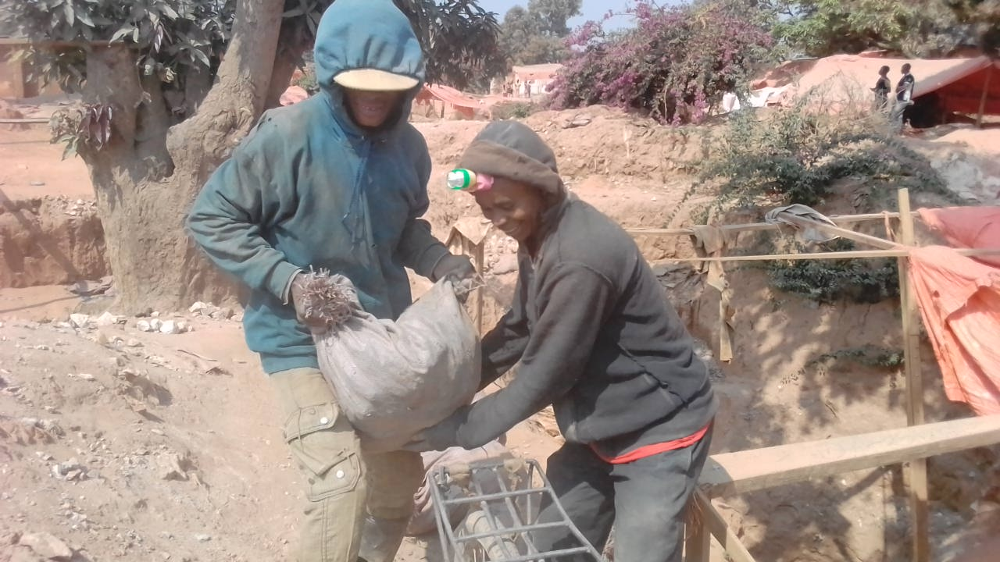
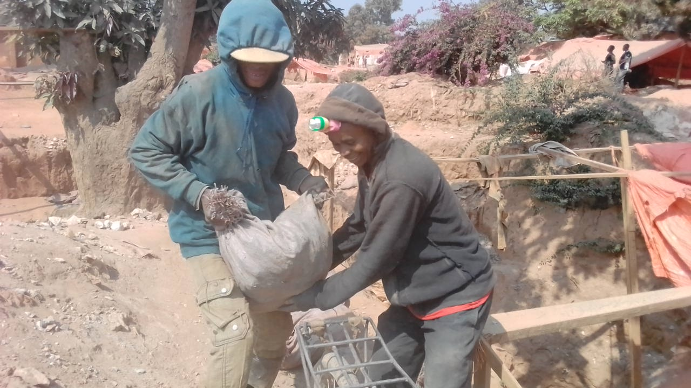

 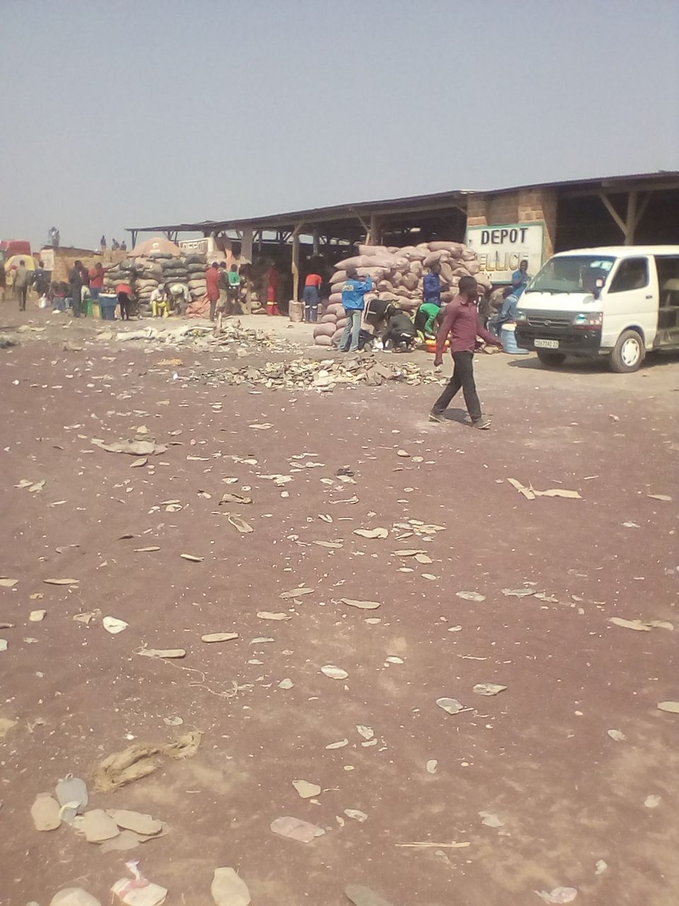
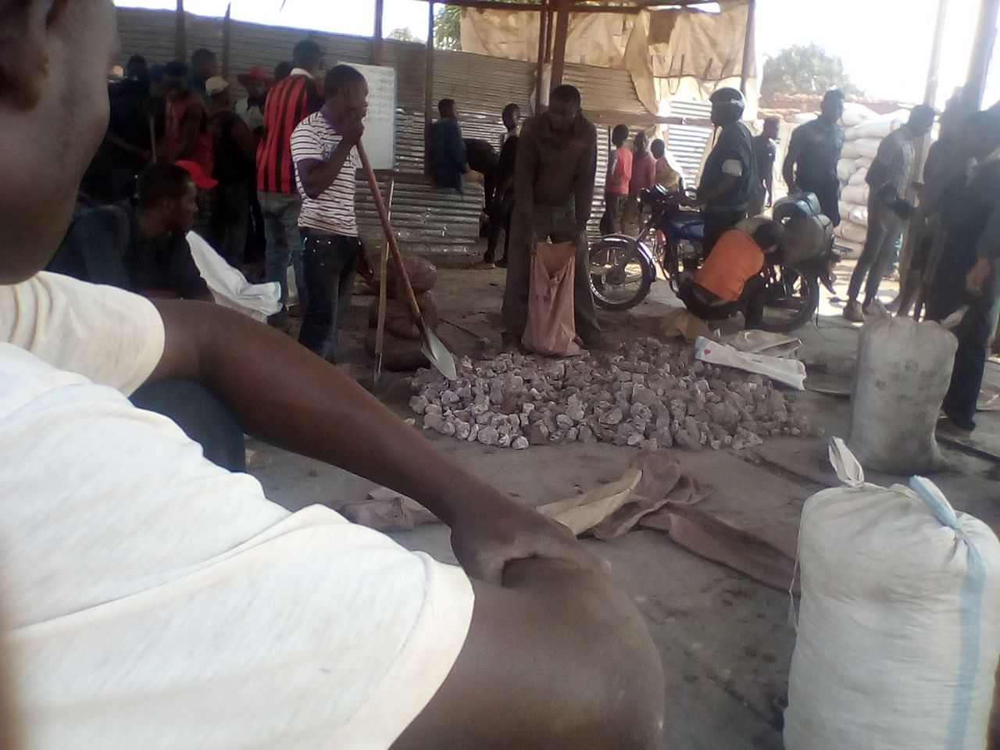
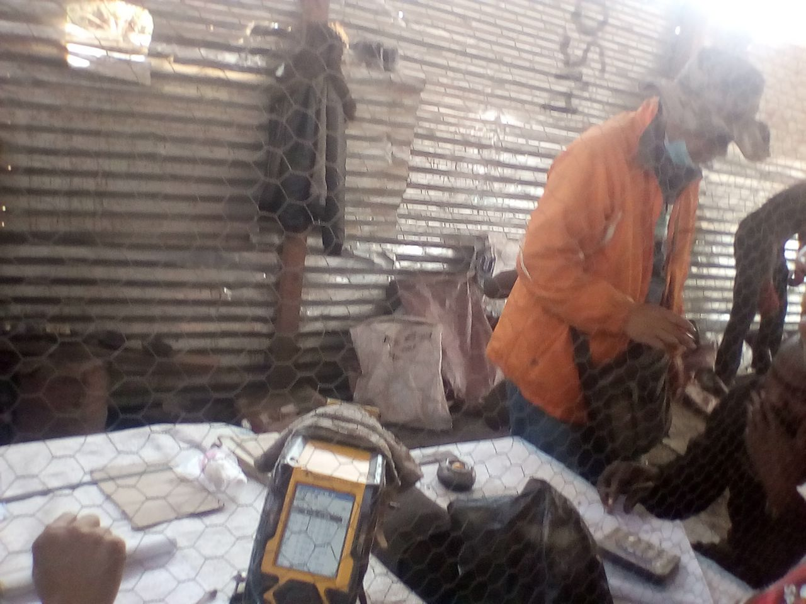
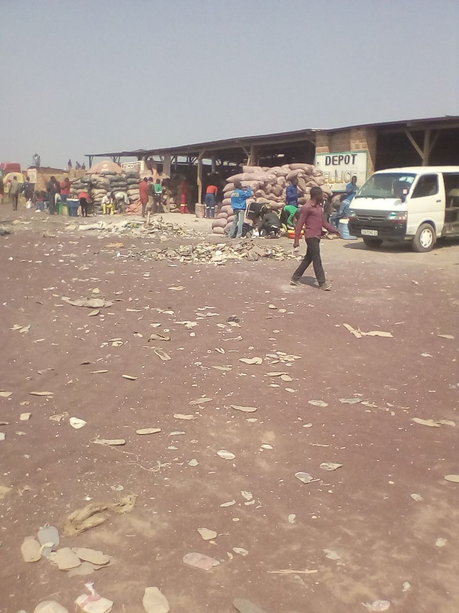
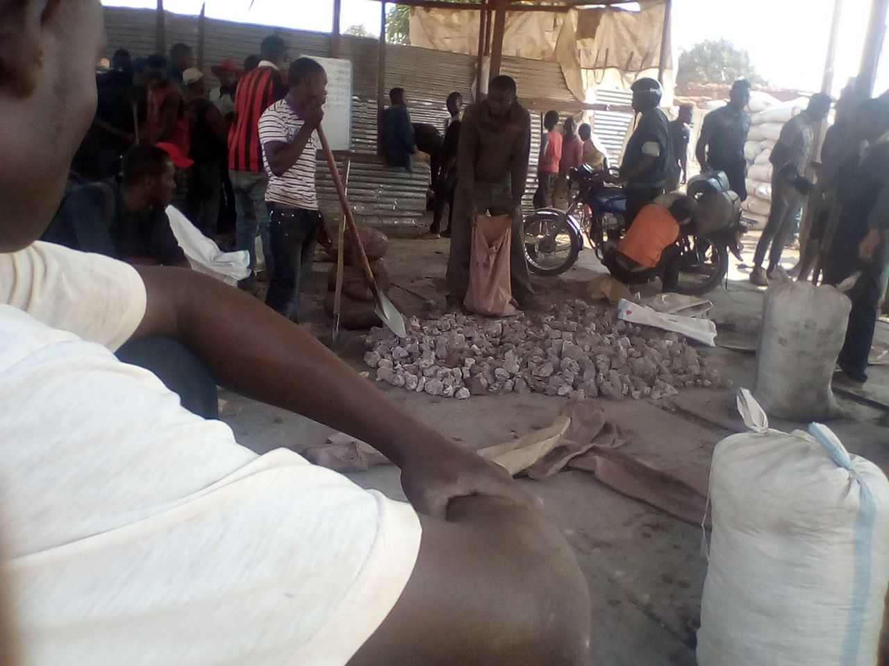
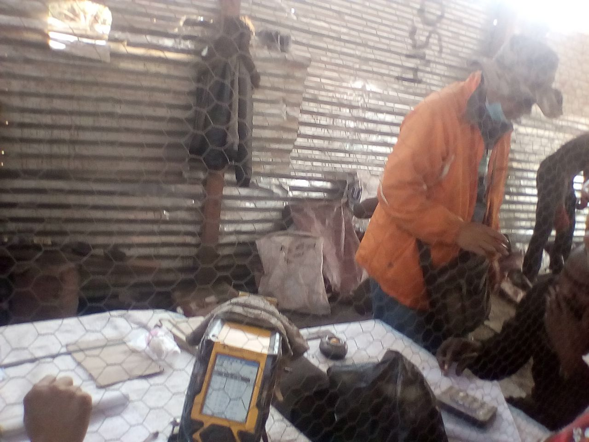
Kolwezi, Provinz Lualaba, DR Kongo: Transport und Verkauf der in den Minen abgebauten Erze.
“Wir ziehen die Säcke mit einem Seil aus der Mine.
Wir bringen die Säcke mit dem Fahrrad oder dem Motorrad zum nächsten Fahrzeug und danach zum Depot, wo wir die Säcke verkaufen. Die Chinesen besitzen die Depots.”
“Wenn wir mit dem Kobalt im Depot ankommen, leeren wir alle Säcke am Boden aus. Wir zerreiben den Kobalt und entnehmen eine kleine Menge, um ihn zu mahlen. Wir erhitzen das Material auf einem Teller und legen es dann auf das ‚Metorex’-Gerät, das den Prozentanteil [Mineralgehalt] misst. Ein Chinese ist bei der Waage, ein anderer beim Metorex, und der Dritte verhandelt den Preis.”
Marcel Kapepe, Minenarbeiter aus Kolwezi, Provinz Lualaba, Demokratische Republik Kongo
Mountain Weld/Kuantan
Ein besonders problematisches Beispiel für die Auslagerung von «schmutziger» Metallverhüttung in Billiglohnländer ist die Aufarbeitung von Seltenen Erden (SEE) aus Westaustraliens Mount Weld Mine in Malaysia. Anstatt die Aufarbeitung der Seltenen Erden am Minenstandort in Australien oder alternativ an der Australischen Westküste durchzuführen, wird das SEE-haltige Roherz über 6’000 Kilometer durch den indischen Ozean verschifft, um es in Kuantan (Malaysia) weiter zu verarbeiten.
Die schnell in einem Mangrovenwald mit ungeeignetem Baugrund hochgezogene Anlage des australischen Bergbau-Unternehmens Lynas verfügt entgegen den Empfehlungen der als wirtschaftsfreundlich bekannten Internationalen Atomenergieagentur IAEA nicht über ein Endlager für die bei der Verarbeitung anfallenden radioaktiven Substanzen. Anstattdessen beabsichtigen die Betreiber, die anfallenden radioaktiven Abfälle soweit herunter zu verdünnen, bis sie die Radioaktivitäts-Grenzwerte unterschreiten. Die Abfälle sollen dann im Baugewerbe und als Bodenzusatzstoff («Condisoil») weiterverwendet werden. Skandalträchtig war auch das Genehmigungsverfahren ohne gesetzeskonforme Umweltverträglichkeitsprüfung sowie Einschüchterungsversuche der malaysischen Regierung von Gegnern der Anlage.
Ingenieure des international renommierten Anlagenbauers Akzo-Nobel leakten Informationen über undichte Betontanks und weitere aus Ingenieurssicht unhaltbare technische Mängel an die New York Times. Akzo Nobel beendete seine Zusammenarbeit mit Lynas mitten in der Bauphase.
Der Bau der Anlage führte zur grössten Umweltprotestbewegung in der Geschichte Malaysias. Dies auch deshalb, weil eine von 1979 bis 1994 betriebene Selten-Erd-Raffinerie in Perak (ebenfalls Malaysia) mit zahlreichen Krebstoten auf lokaler Ebene in Verbindung gebracht wird. Die von Mitsubishi Chemicals betriebene Anlage wurde 1994 auf rechtlichem Wege gestoppt und Mitsubishi musste etwa 100 Millionen US-Dollar für die Sanierung aufwenden. Entschädigungen an Opfer wurden nicht bezahlt.
Ungeachtet der Proteste wurde die gegenüber dem Mitsubishi-Projekt etwa zehnmal grössere Lynas-Anlage Ende 2011 in Betrieb genommen – und arbeitet jetzt wegen der wieder gesunkenen SEE-Rohstoffpreise wirtschaftlich ineffizient. Sowohl Siemens als auch BASF sind resp. waren über Joint Ventures und Lieferverträge wesentlich an dem Projekt beteiligt.
Quellen: New York Times, 31.1.2012; Lee, Jade. Seltene Erden - Fluch oder Segen für Malaysia? Dezember 2012; Heuveling, Johanna. Seltene Erden – Menschenleben nicht gerechnet. In: Schattenblick.de. 11.02.2016; mineralienatlas.de; stoplynas.org.
Mountain Pass Mine
Diese Mine wurde bereits 1952 eröffnet und war lange die führende SEE-Mine weltweit. Nach einem Dammbruch, bei dem Minen-Tailings (dickflüssige Bergbauabfälle) freigesetzt wurden, schlossen die Behörden die Mine Ende der 1990er Jahre. Die Aufräumarbeiten dauerten jahrelang.
Infolge der chinesischen Exportbeschränkungen wurde in der 2007 wiedereröffneten Mine die Produktion wieder hochgefahren – nun mit dem Versprechen, die Extraktion umweltfreundlicher zu gestalten. Allerdings wird möglicherweise ein Teil des Materials nach Estland zur Aufarbeitung exportiert (ähnlich wie in Australien, Malaysia). Ausserdem besitzt Molycorp zwei Minen in China, über die das Unternehmen keine Auskunft gibt. Die Mountain Pass Mine wurde 2015 nach dem erneuten Preisverfall seltener Erden wieder geschlossen.
Quellen: Mining.com; https://en.wikipedia.org/wiki/Mountain_Pass_rare_earth_mine; Adams, John. Mountain Pass Mine closure puts US at greater risk. Thehill.com, 9.11.2015.
Südchina
In mehreren südchinesischen Provinzen (unter anderem in Jianxi, Fujian und Guangdong) werden Seltene Erden (SEE) illegal abgebaut: Dabei werden in SEE-haltigen Tonerden Löcher gegraben, starke Säuren hineingekippt und das Eluat gewonnen.
Da die Abbaumethode äusserst primitiv ist und tausende an Mini-Standorten ausgebeutet werden, findet keinerlei Abwasserreinigung statt. Das führt zu teils massiven Schäden bei der lokalen Land- und Teichwirtschaft; Trinkwasser wird unbrauchbar usw. Besonders während der Hochpreisphase der Seltenen Erden ab 2010 war das Geschäft lukrativ und wurde gemäss lokalen Quellen vielfach unter Beteiligung lokaler Parteifunktionäre abgewickelt. Die Regierung in Peking hat schon mehrfach Abhilfe versprochen, kommt gegen die grassierende Korruption aber offenbar nur teilweise an. Von Ende 2016 bis April 2017 gab es eine erneute Anti-Korruptions-Kampagne in diesem Bereich: Jetzt wird durch Tracking der Produkte versucht, illegale Exporte zu unterbinden. Zahlreiche Betriebe mussten ausserdem wegen Umweltauflagen schliessen.
Quellen: mineralienatlas.de; selteneerden.de (Tradium); Bork, Henrik. Chinas skrupellose Jagd auf die Seltenen Erden. In: Tagesanzeiger, 08.11.2010.
Embrach
In einem Schweizer Hochsicherheitszollfreilager in der Nähe des Flughafens Zürich lagert die Schweizerische Metallhandels AG Deutschland strategische Metalle als Wertanlagen.
Bei (Finanz-)Krisen werden sie hier vor dem deutschen Staat vor Enteignung geschützt. Metalle wie Indium, Hafnium oder Gallium weisen eine vergleichsweise geringe Jahresproduktion auf. Ihre Preise werden auf Rohstoffbörsen bestimmt, bei Verknappung steigen sie.
Durch die oft unwiederbringliche Implementierung dieser seltenen Metalle in Hightech-Produkte rechnen die Kund_innen mit steigenden Preisen ihrer Wertanlagen. Umgekehrt arbeiten Forschungslabors intensiv an der Rückgewinnung von seltenen Metallen wie Indium, um einerseits möglichen zukünftigen Engpässen vorzubeugen, und um andererseits die Abbaumengen dieser unter gesundheitsschädigenden und ökologisch problematischen Bedingungen gewonnenen Rohstoffe zu reduzieren.
Am 24.1.16 begleiteten wir eine der monatlich staffindenden Kundentouren und erhielten Einblick in die Wertanlagen im Zollfreilager. Fotografieren war uns erlaubt, filmen nicht. Auf die Firma aufmerksam gemacht wurden wir durch Gespräche mit der Empa, welche die Reinheit der Metalle prüft. Umstritten ist, dass die Firma dem Markt wertvolle Rohstoffe entzieht, indem sie einen Überschuss an Metallen zur Befriedigung von Kundenbedürfnissen einlagert.
Gespräche und Führung durch Jörg Wiedermann, Thomas Budde, Stefan Gut, Schweizerische Metallhandels AG Deutschland (24.1.2016); Gespräch mit Heinz Böni, Empa St. Gallen (7.9.2015).

 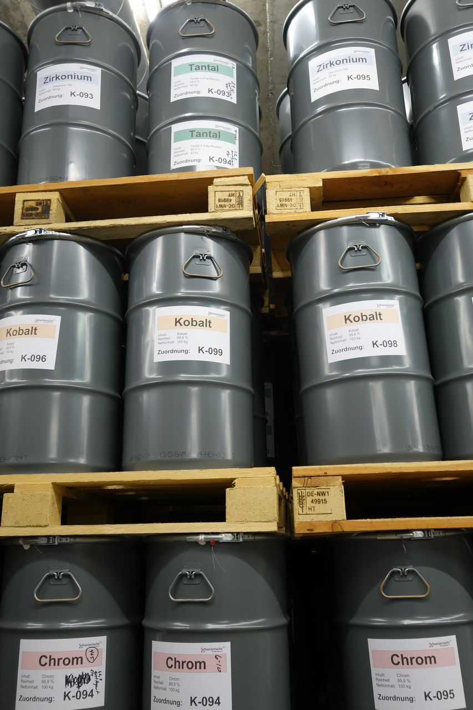
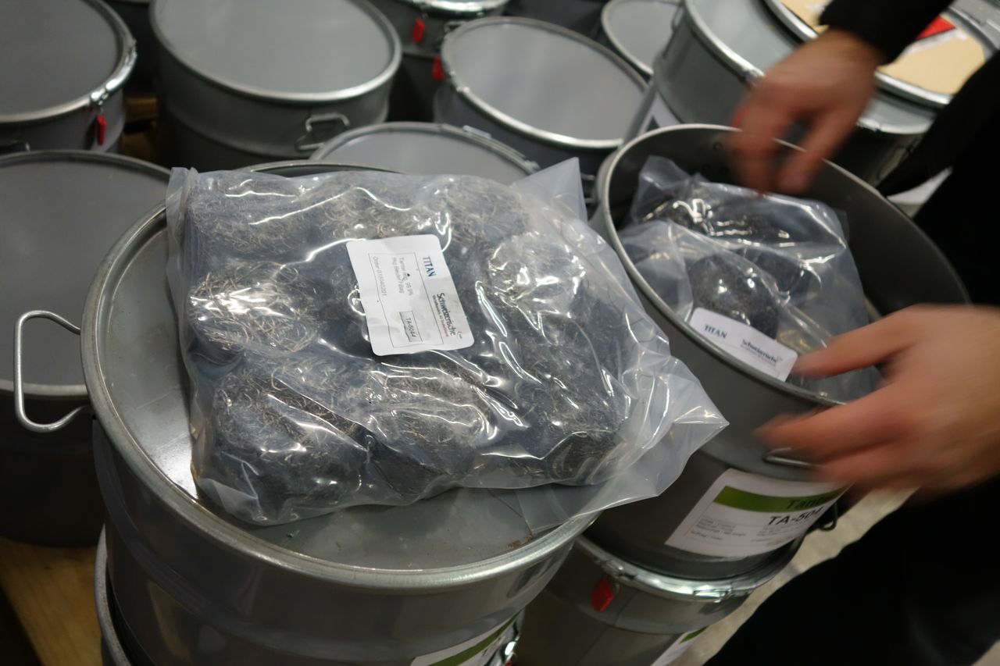
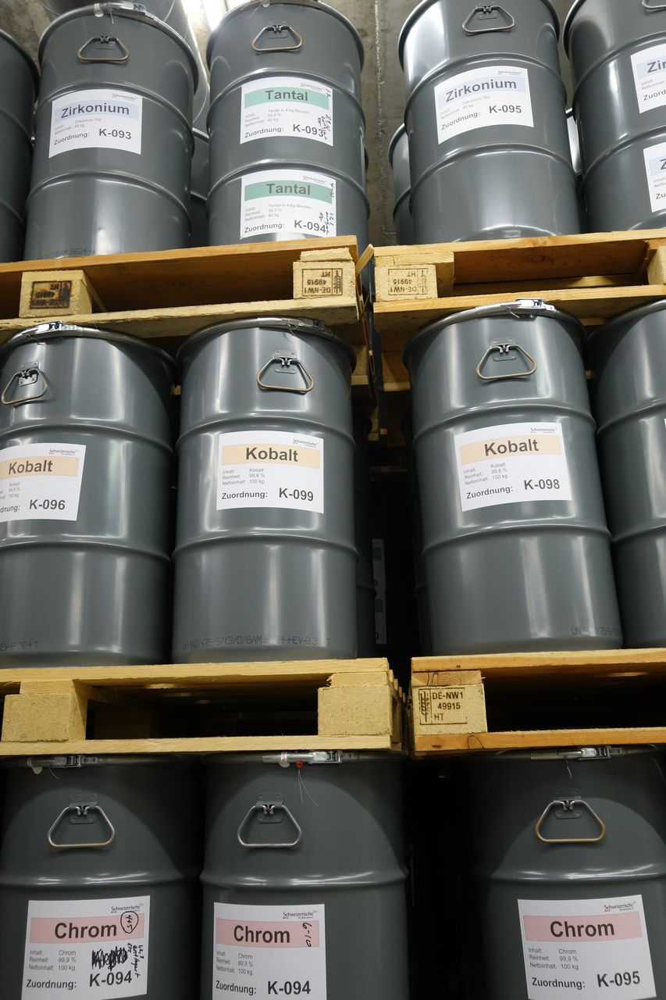
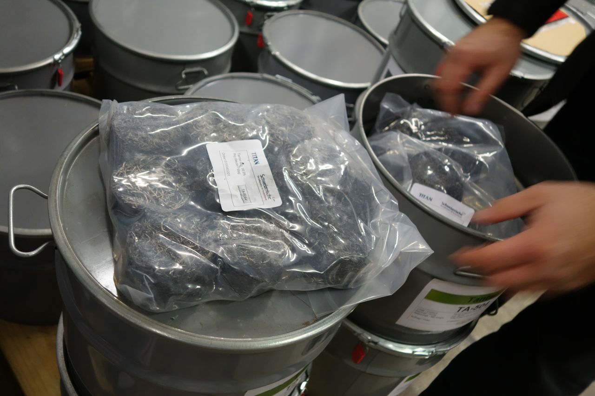
 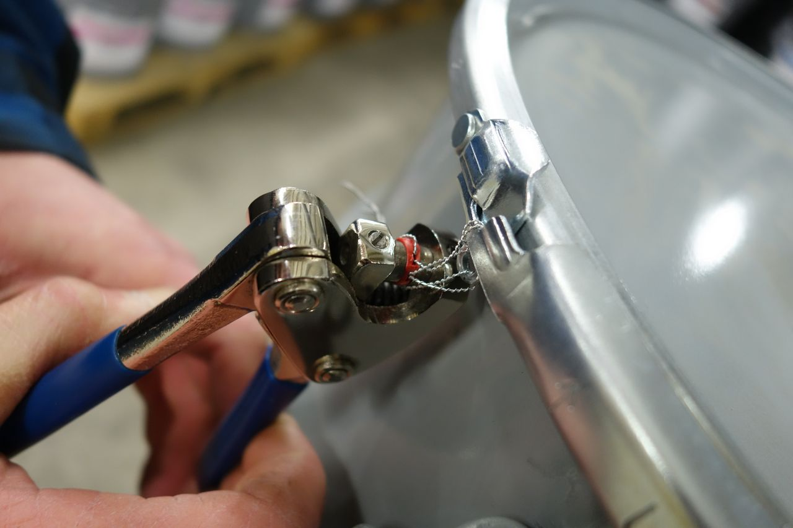
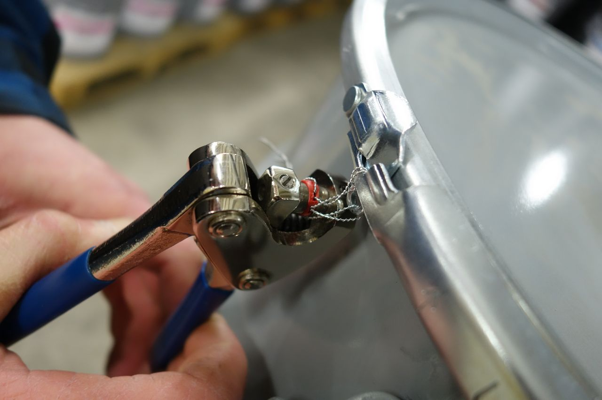


Schweizerische Metallhandels AG Deutschland, Embrach, Schweiz: Im unterirdischen Hochsicherheitszollfreilager gelagerte ‘strategische Metalle’, unter anderem Kobalt oder Indium, als Assets.